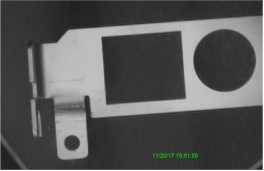

Công cụ tạo mảng đồ họa sẽ hiển thị đầu ra dữ liệu đầu vào theo giá trị chỉ mục tương ứng. Hiệu quả ứng dụng của nó được hiển thị như Hình 1.

| Phân loại | Tên tham số | Mô tả tham số |
|---|---|---|
| Cửa sổ thuộc tính | Kiểu dữ liệu | Chọn kiểu dữ liệu của dữ liệu đầu vào. |
| Tự động xóa | Kiểm soát việc có xóa mảng đầu ra hay không, nếu xóa mảng, mỗi lần chạy công cụ sẽ xóa sạch dữ liệu trong mảng đầu ra. | |
| Cửa sổ hình ảnh | Không | Không |
| Liên kết dữ liệu | Dữ liệu đầu vào | Nhập dữ liệu để tạo thành mảng đồ họa, tùy chọn kiểu. |
| Chỉ mục dữ liệu đầu vào | Nhập chỉ mục dữ liệu đầu vào, kiểu int; nếu dữ liệu đầu vào là kiểu sc2Vector, thì dữ liệu đầu ra sẽ là mảng kiểu sc2Vector, chỉ mục dữ liệu đầu vào chính là chỉ mục xác định vị trí ghi dữ liệu đầu vào trong mảng đầu ra. |
| Giao diện nâng cao | Không | Không |
| Phân loại | Tên tham số | Mô tả tham số |
|---|---|---|
| Cửa sổ giám sát | Mảng đầu ra | Xuất ra mảng đồ họa được hình thành. |
| Kết quả thực thi | Kết quả thực thi của công cụ. | |
| Thời gian thực thi | Thời gian thực thi của công cụ. | |
| Cửa sổ hình ảnh | Mảng đầu ra | Hiển thị mảng đồ họa được hình thành, giống với tham số dữ liệu đầu ra trong cửa sổ giám sát. |
| Kết quả thực thi | Hiển thị kết quả thực thi công cụ, thực thi thành công hiển thị "OK", thất bại hiển thị "NG", giống với tham số kết quả thực thi trong cửa sổ giám sát. | |
| Liên kết dữ liệu | Mảng đầu ra | Xuất ra mảng đồ họa được hình thành, giống với tham số dữ liệu đầu ra trong cửa sổ giám sát. Tức là mảng đồ họa được tạo ra sau khi ghi dữ liệu đầu vào theo vị trí chỉ mục, kích thước không cố định, thay đổi theo chỉ mục được ghi. |
Khi chọn kiểu dữ liệu, cần phải giống với kiểu dữ liệu của dữ liệu đầu vào, các kiểu dữ liệu tùy chọn được hiển thị trong Bảng 1.
Bảng 1 Kiểu dữ liệu
| Kiểu dữ liệu | Mô tả | Kiểu dữ liệu | Mô tả |
|---|---|---|---|
| GsTextDisplayParam | Kiểu mảng đầu ra của công cụ mảng hiển thị văn bản. | Sc2Vector | Vector 2D. |
| scCaliperTwoEdgeResult | Kiểu kết quả đầu ra của công cụ thước kẹp hai cạnh (Double Edge Caliper). | scCircle | Hình tròn. Kiểu đầu ra của các công cụ tìm hình tròn, khớp hình tròn (Circle Fitting). |
| scCaliperOneEdgeResult | Kiểu kết quả đầu ra của công cụ thước kẹp một cạnh (Single Edge Caliper). | scLine | Đường thẳng. Kiểu đầu ra của các công cụ tìm đường thẳng, khớp đường thẳng (Line Fitting). |
| GsMultiCLOutputResult | Kiểu kết quả tìm kiếm đầu ra của công cụ định vị đa đường tròn đa đường thẳng. |
参见“\Samples\图形数组生成工具.gvp”。